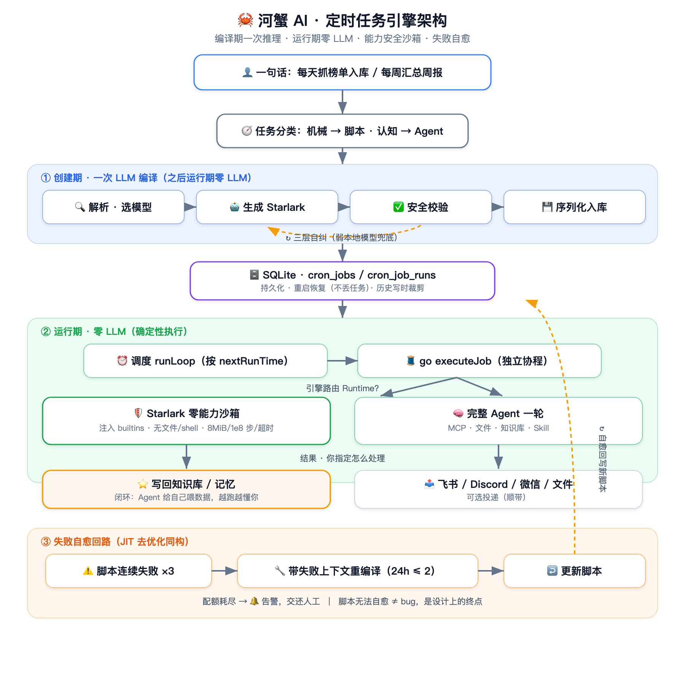
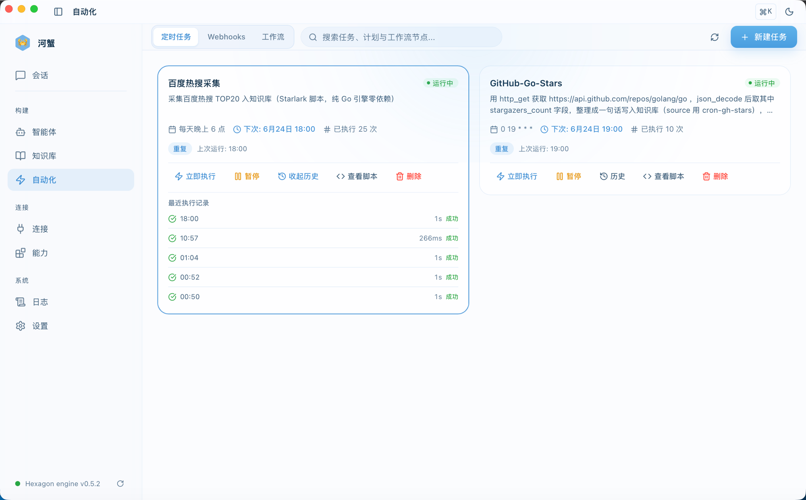
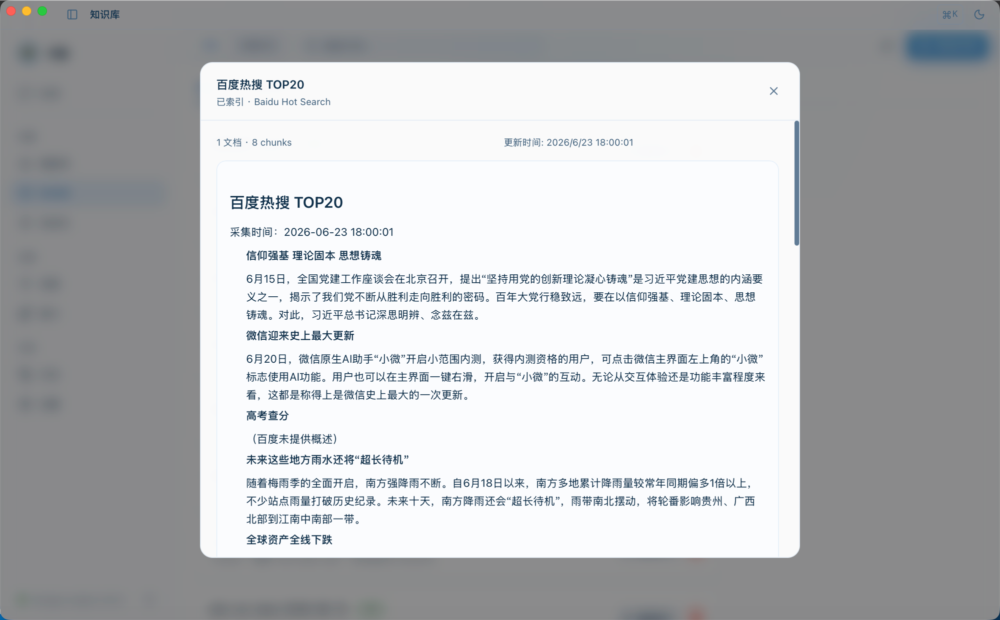
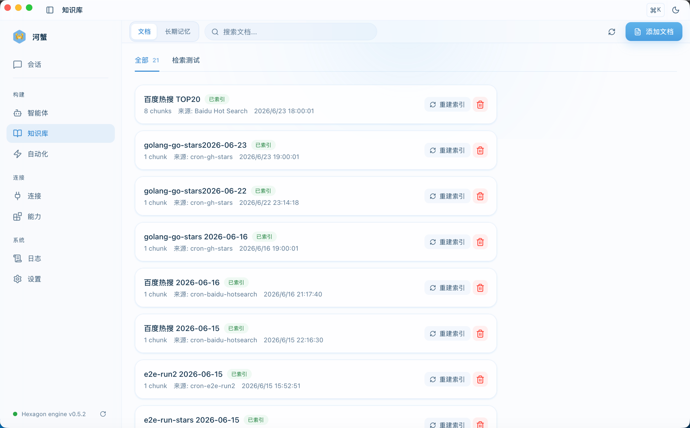

"每天盯竞品动态、只把上次之后新增的整理好推到飞书""把几个信息源的新内容抓下来、收进知识库""把本地这堆文档归一遍、汇总成周报"——这些重复、机械、按点发生的活，过去散落在 cron 脚本、Zapier / IFTTT、和一堆没人愿意维护的胶水里。
AI Agent 出现之后，这类活的入口理应坍缩成一句话：你把意图说给它，剩下的拆解、执行、收尾它自己来。结果你说怎么处理就怎么处理——推给你、发到群里、存成文件都行；而其中最值钱的一种，是写回 Agent 自己的知识库和记忆，让它给自己喂数据、越跑越新、越用越懂你。说得糙一点，就是给自己养一个 7×24 不喊累、还会自己长本事的"赛博牛马"。
从"说一句话"到"它常年靠谱地办成"，中间隔着一连串并不轻松的工程问题——这套引擎要做的，是把一句自然语言编译成一段会自愈的沙箱脚本，并自动判定这件事该被脚本跑、还是被 Agent 跑。
这篇不讲"AI 能帮你做自动化"这种正确的废话，只拆一件事：要让 Agent 真正接管"定时干活"，工程上到底要解决什么。
本文核心判断
让 Agent 接管定时任务，第一个、也是最关键的设计决策是：每次到点触发，到底要不要调一次大模型？
河蟹 AI 的答案是不要——创建任务时调一次 LLM，把你的话编译成一段脚本；之后每次执行，跑的是这段确定性的代码，运行期一次模型都不碰。
这一个决定，往下逼出了四个必须回答的问题。这篇文章就是这四个答案。
先定一件事：编译一次，而不是每次推理
一个定时任务最朴素的 AI 实现是：每次到点，就把任务描述丢给大模型，让它现想现做。这条路能跑，但代价大得离谱——每次执行都是一轮完整的 LLM 调用：要花钱、要联网、慢，而且不确定。同一句"抓榜单"，今天抓对了，明天模型状态飘一点可能就抓歪了。一个每小时跑一次的任务，一个月就是 720 轮对话——而它干的不过是同一件死板的事。粗算一笔账：一轮按几千 token、主流云模型的价位，单这一个任务每月就是几块到几十块的"心跳开销"；多养几条、或者换成更高频的，账单线性往上涨。编译方案把这块直接归零——只剩创建时那一次。（这是数量级估算，不是实测；真实数字随模型与 token 量浮动。）
河蟹 AI 把这件事在时间轴上切成两段：创建期，和运行期。编译器的契约写得很直白（cron/compiler.go）：
// JobSpecCompiler 把用户的自然语言任务需求编译成可执行 JobSpec（一次性 LLM 调用）。// 实现要求：// - 创建期一次性消耗 LLM tokens；运行时不再调用 LLM// - 失败必须返回错误（拒绝入库），避免空 Spec 进入运行时// - 输出脚本须通过 validators.go 中的安全校验就这三行，把整套引擎的性格定死了：
- 成本——创建时烧一次 token，之后跑一万次都是零。高频任务的边际成本是 0，而不是线性增长。（要厘清的是：省的是运行期的 token；编译那一次的算力——云模型在远端、本地模型吃你自己机器的 CPU/GPU——仍要花，只是从"每次"变成"一次"。）
- 离线——脚本只用沙箱内建能力，运行期不依赖模型在不在线。云断了、API key 过期了，已编译的任务照跑。
- 确定性——同一段脚本今天明天跑出来逻辑一模一样，不会因为模型抽风而漂移。
- 可审计——产物是一段你能看见、能读、能改的代码，不是黑盒。对一个跑在你自己机器上、还没人盯着的自动化系统，这点尤其重要。
把"理解意图"和"执行任务"在时间上拆开——编译期烧一次 token，运行期一次都不烧。这是这套引擎所有好处的共同源头。
编译那一刻，它具体做了什么
编译用 temperature = 0（要稳定、不要创意），让模型把意图转成一段纯 JSON：runtime + script + 超时。两个工程细节值得点出：
- 编译用哪个模型，跟着你走——不在启动时固化，每次编译动态解析"你当前的默认模型"。你在界面把模型从云端切到本地 Ollama，下一次编译立刻跟着切，不用重启。
- 编译失败一律拒绝入库——绝不让半成品脚本溜进运行时，宁可创建时当面报错，也不留个哑炮到半夜。（编译调用本身遇 5xx / 超时 / 限流会自动指数退避重试，最多 3 次，不打扰你。）
system prompt 里钉了几条硬规则，都是踩出来的，直接决定采集脚本扛不扛得住网页小改版：
- 每次 HTTP 后必须检查状态码，非 2xx 一律判失败——禁止"发了就当成功"。
- URL 逐字使用，不许模型臆造改写。
- 优先解析页面内嵌的结构化 JSON，而不是易变的 CSS class——后者一改版就碎。
光靠 prompt 约束模型还不够，引擎自己再兜一层：每个 http_get / http_post 默认带上浏览器 User-Agent。这条也是踩出来的——有的站点（真实踩过的坑：百度热搜）对 Go 默认的 Go-http-client/1.1 直接返一坨反爬 HTML，脚本 json_decode 一上来就崩在开头那个 < 上。脚本仍可经 headers 覆盖 UA，但默认值先保证它"不至于因为长得像爬虫就被请出门"。
编译出来的脚本长这样，注意它一行 import 都没有（能力全靠注入）：
def run(): resp = http_get("https://example.com/board", headers = {"User-Agent": "Mozilla/5.0"}) if resp["status"] < 200 or resp["status"] >= 300: return {"status": "error", "error": "fetch non-2xx: %d" % resp["status"]} blocks = re_findall("(?s)<!--data:(.*?)-->", resp["body"]) data = json_decode(blocks[0]) titles = [it["title"].strip() for it in data.get("list", [])] return {"status": "success", "data": {"title": "榜单 " + now()["date"], "content": "\n".join(titles)}}emit(run())但一个决定不会只带来好处。"编译成死脚本"这件事，立刻往下砸出四个绕不开的问题——这篇剩下的篇幅，就是逐个回答它们：
- 问题一：这段 AI 现写的代码，凭什么敢在你自己的机器上跑？
- 问题二：万一这件事根本不该被编译成一段死脚本？
- 问题三：脚本是死的、世界是活的，网页一改版脚本失效了怎么办？
- 问题四：用户手里是连规整 JSON 都输不利索的本地小模型，怎么办？
问题一：AI 写的代码，凭什么敢在你机器上跑
"让模型生成代码然后执行"，最大的恐惧就是安全：这段代码要在用户机器上跑，万一它（或者诱导它的人）写了 os.system("rm -rf ~") 怎么办？
所以安全姿态只有一条总纲：把 LLM 吐出来的每一段代码，都当成不可信、甚至对抗性的输入——和防 prompt injection 是同一种警惕。它可能被诱导、可能幻觉、也可能只是写错了；沙箱的职责不是"相信它写得对"，而是"假设它写得坏，也跑不出乱子"。下面的每一道防线，都是从这个前提推出来的。
业界常见的做法是黑名单：解析脚本 AST，禁掉 import os、禁掉 eval、禁掉 __import__……这条路有个根本毛病：你永远在追逃逸。默认所有能力都开放，你一个个去堵，攻击者只要找到一个你没想到的口子就赢了。Python 沙箱被绕过的历史，基本就是一部黑名单失守史。
河蟹 AI 走的是反过来的路——业界叫它能力安全模型（capability-based security）：默认零权限，能力靠显式授予。默认引擎用的是 Starlark——Google 为 Bazel 设计的 Python 方言，纯 Go 实现，本就是为"确定性、可重复构建"而生：它没有 import、没有 eval、没有 exec、没有文件、没有网络。一个 Starlark 脚本，默认什么都干不了。
脚本能做的每一件事，都是宿主显式注入的内建函数（cron/engine_starlark.go）：
predeclared := starlark.StringDict{ "http_get": ..., // GET，返回 {"status", "body"} "http_post": ..., "json_decode": ..., "json_encode": ..., "re_findall": ..., "re_sub": ..., "html_unescape": ..., "url_encode": ..., "sha256": ..., "now": ..., "kb_ingest": ..., // 写入本地知识库（in-process） "state_get": ..., "state_set": ..., // 跨运行持久化状态（增量采集 / 去重） "wake_agent": ..., // "有料"才升级成完整 Agent（见问题二） "emit": ..., // 提交最终结果（脚本必须调一次）}AST 黑名单：默认全能力，逐个禁——你永远在追逃逸。
结构化沙箱：默认零能力，逐个给——逃逸无从谈起，因为压根没有"外面"。
于是脚本的整个安全校验面，小到只剩三件事（validateStarlarkSource）：
func validateStarlarkSource(script string) error { f, err := opts.Parse("job.star", script, 0) // 1. 能不能解析 if err != nil { return ... } for _, stmt := range f.Stmts { if _, ok := stmt.(*syntax.LoadStmt); ok { // 2. 禁 load() 加载外部模块 return fmt.Errorf("load() is not allowed in cron scripts") } } if !strings.Contains(script, "emit(") && // 3. 必须产出结果（emit !strings.Contains(script, "wake_agent(") { // 或 wake_agent，门任务可只 wake） return fmt.Errorf("must call emit({...}) or wake_agent(...)") } return nil}解析通过 + 不许 load() + 必须产出结果（emit()，或门任务的 wake_agent()）。没有一长串"禁止函数名"清单，因为不需要——能力面本身就是封闭的。
两道护栏，外加一条反直觉的网络取舍
结构化沙箱管住了"能调什么"，剩下两件事得拦死，外加一处网络上的取舍要交代：
- 撑爆内存——单个 HTTP 响应体上限 8 MiB，一个失控的大页面拖不垮进程。
- 死循环——单次执行的 Starlark 步数上限 1 亿步，
while True会被步数直接掐掉，而不是干等到超时。再叠一层执行超时（按脚本声明的timeout_s，缺省回退 300s）+ 协作式取消兜底。 - 网络——
http_get / http_post是脚本唯一伸到进程外的手。要不要替它把网络也圈起来？我们试过，最后刻意没圈——这条单说。
教科书答案会让你上一道 SSRF 守卫：在拨号层按"解析后的真实 IP"拦黑名单——loopback、私有网段、链路本地、云厂商元数据地址（169.254.169.254，Capital One 2019 偷云凭证那次 SSRF 的入口）全禁掉，顺带把 DNS rebinding 也防了。我们一开始正是这么写的。
后来把它拆了，理由很具体：不少用户本机挂着 fake-ip 模式的透明代理（Clash / Surge 这一类），它会把公网域名先映射成一段保留地址、再在代理内部转发出去。守卫一看目标 IP 落在私有段，二话不说拦死——结果一批正常的公网抓取，被自家守卫误杀了。
这恰好戳中了定位：这是个跑在你自己机器上的桌面应用，它本就该共享你的网络上下文——你的代理、你的 hosts、你的局域网。一个本地工具能访问 localhost、能顺着你的代理出网，本就稀松平常（你的 IDE、Docker、dev server 天天这么干，没人当它是漏洞）；硬替用户把内网拦掉，挡的是正经活，未必挡得住真实威胁。
更根本的一层是：脚本能不能干坏事，从来不取决于它能连哪个 IP，而取决于它手里被注入了哪些能力——而能力面早被结构化沙箱收死在那十来个内建里了。它没有文件、没有 shell、没有任意 socket，能伸出进程的只有 http_get / http_post。在这个前提下，"能连到哪个 IP"是一层正交的事：与其去猜哪个网段该拦、还连累正常流量，不如把网络按宿主机语义放开，把守卫的全部力气压在守住能力面上。
真正的安全边界是能力面，不是 IP 黑名单。沙箱把"能调什么"收死，网络就能放心交还给宿主机——一个跑在你自己机器上的工具，本该和你的浏览器、你的终端共享同一张网。
补一句：Starlark 是默认，但不是唯一。引擎做了接口抽象，调度器按 Runtime 路由——还留了一个可选的 python3 引擎给少数需要更强表达力的存量任务。但它要 shell 出去调系统解释器，所以默认不用：河蟹 AI 的一条硬约束是单二进制、零外部依赖，纯 Go 的 Starlark 在三大平台上行为一致、用户什么都不用装，这才配当默认。
问题二：万一这事根本不该编译成脚本
"编译成脚本"对"抓取—清洗—存储"这种机械活很对路。但有一类任务，编译成死脚本就废了——比如"每天总结昨天的新闻并点评"。"总结""点评"是认知活，每天内容都不一样，它的价值恰恰在于每次都现场推理。把它冻成一段固定脚本，等于把它最值钱的部分抽掉了。
所以引擎在编译之前先做一次分类（cron/agent_mode.go）：
// 命中"认知动词" → 每次都要 Agent 现场推理 → agent 模式var reasoningVerbs = []string{ "总结", "分析", "判断", "评估", "筛选出最", "点评", "撰写", "起草", "解读", "建议", "诊断", ...}// 采集 / 下载 / 保存 / 同步 等机械动词，刻意不在表里 → 编译成脚本func ClassifyTaskMode(prompt string) string { lower := strings.ToLower(prompt) for _, v := range reasoningVerbs { if strings.Contains(lower, v) { return RuntimeAgent } } return "" // 默认：脚本模式（零 LLM 执行）}机械 I/O 任务编译成脚本（零 LLM 执行）；认知任务标成 agent 模式，每次触发跑一轮完整的 Agent。这里用的是确定性关键词分类，不是再调一次 LLM——零成本、可测试。
这条分流线，顺手把"定时任务"的能力面撑成了两类活：
- 脚本模式（机械、零 token）——定时采集网页 / 抓 API、监控页面变化（
sha256+ 跨运行state_get/set去重，只要"上次之后的新内容"）、清洗结构化数据，产物直接kb_ingest写进知识库。 - agent 模式（认知、每轮一次推理、挂全套工具链）——整理本地文档、把一周工作汇总成周报、对采集来的内容做总结 / 分析 / 点评。它走的是和聊天同一个
eng.Process，所以文件工具、知识库、Skill、MCP 全都在手——读得了本地文件，也调得动外部工具。
这条边界还带个利落的副作用：Starlark 沙箱没有文件系统访问，所以"整理本地文档"这类天然落到 agent 模式。分流不只是为了省 token，它同时是一条能力边界的天然分界——机械活交给零权限沙箱，认知活才解锁完整工具链。
更进一步，这条线现在不是静态的二选一了。脚本还能当一个廉价的"门"：每 tick 零 token 跑，只有"真有料"时才调一个内建 wake_agent(context)，把这一轮临时升级成完整 Agent（花 token，且最多每小时升一次）。这头牛马平时卧着省草料、有重活才起身——值得动脑时才把大脑叫醒——这套"条件升级门"借鉴了 Hermes 的 wakeAgent。门脚本可以只 wake_agent 不 emit，算合法输出。
为什么敢用这么"土"的关键词分类？因为两种误判的代价是不对称的，代码注释里写得明白：把认知任务误判成脚本，编译出来跑不通——但下一节的"自愈"会兜底；把机械任务误判成 agent，无非每次多烧点 token。既然错向一边代价小、另一边有兜底，动词表就保持保守，宁可少标几个认知词，也不轻易把任务推去烧 token。
agent 模式还有两道闸，都是被现实逼出来的：
- 频率守卫——agent 任务每次执行烧一整轮对话，强制最小间隔 1 小时。你建一个"每分钟分析一次"的 agent 任务会被当场拦下，提示改成 @hourly / @daily。
- 幻觉守卫——一个任务说要"入库"，那它必须真的调了
knowledge_ingest工具。如果 Agent 回了句"已完成入库"、却一个入库工具都没调，引擎判它失败而不是成功——没存的东西就是没存，"说完成了"是幻觉，不是结果。
问题三：死代码遇上活世界
编译出来的脚本，是基于"创建那一刻的网页结构"生成的。但网页会改版。今天能跑的采集脚本，下个月可能因为对方把页面里那段 <!--data:--> 注释换了个格式，就抓空了。
"编译一次、运行期零 token"的代价就在这——脚本是死的，世界是活的。这是整个设计里最容易被忽略、却最决定"能不能托管给它不管"的一环。
河蟹 AI 的答案是自愈：脚本连续失败到阈值，引擎带着失败上下文，把它重新编译一次（maybeSelfHeal）：
const selfHealThreshold = 3 // 连续失败 3 次才触发const selfHealMaxPerWindow = 2 // 24h 内最多自愈 2 次const selfHealWindow = 24 * time.Hour// 把失败原因拼进 prompt，让模型针对性地改enriched := fmt.Sprintf( "%s\n\n[自愈上下文] 该任务此前编译的脚本已连续失败 %d 次，最近错误：\n%s\n"+ "请根据错误原因生成修正后的脚本。", job.SourcePrompt, selfHealThreshold, failCtx)这套机制在代码注释里有一个特别贴切的类比——它同构于 JIT 编译器的"去优化"（deoptimization）：
JIT 先假设热点代码走快路径（编译好的机器码）；一旦运行时发现假设不成立（类型变了），就回退到慢路径（解释器）重新优化。
这里一模一样：平时走快路径（零 token 的脚本）；脚本"网页长这样"的假设破裂了，就回退到慢路径（调一次 LLM 重编译），再优化出一段新脚本。
具体长什么样？举个会真实发生的场景：你那条抓榜单的脚本，靠解析页面里 <!--data:...--> 这段内嵌 JSON。某天对方改版，把标记换成了 <!--board:...-->——脚本 re_findall 抓了个空、emit 出 error。连着三拍都失败，引擎不声不响地把"最近错误：data block missing"连同你最初那句需求一起喂回模型，重编译出一段改抓 <!--board:--> 的新脚本，下一拍这条任务自己就好了——你可能压根没察觉它病过一场。
关键在于，这套自愈是有上限的，不是出错就疯狂重试：
- 24h 内最多 2 次——一个永久坏掉的上游（对方网站直接下线了），不会让你的任务无限重编译、无限烧 token。配额用完，引擎转而发一条"持续失败，请人工看看"的告警，而且这条告警本身也限流（一个冷却窗口最多一条），不会半夜连环轰炸你。
- 只数最近一次成功修复之后的失败——修好之后，之前那串旧失败不会再次满足阈值、触发"过早重愈"。判定用按插入顺序排的行号，避开了 datetime 字符串比较的坑。
- agent 任务不参与自愈——它没有编译好的脚本可改，走的是另一条路：连续失败到阈值就发告警、让人介入，而不是默默地永远失败下去。
自愈不是"出错就重试到天荒地老"，那只会把 token 烧光、把用户烦死。它是有阈值（连错 3 次才动）、有配额（24h 最多 2 次）、有终点（修不好就交给人）的一条退路——这才是能放心托管的样子。
说白了，这头赛博牛马，干活的路被世界改坏了会自己绕条新路；绕够两回还不通，才回头喊你一声。
顺带把这套做法的特别之处说清。定时任务这件事，同类工具大多也能跑"不调 LLM 的脚本"。所以差别从来不在"有没有零 token"，而在那段脚本是怎么来的、跑在哪、坏了谁管：
- 常见做法——你（或 Agent）自己写好一段 shell / 脚本命令挂上去，跑在你机器的全权限环境里、靠权限位约束；坏了，你回去改。
- 河蟹——把你一句自然语言编译进一个零权限结构化沙箱；坏了，它带着报错自愈重编译。
同样是"定时跑一段代码"，区别就一句话：常见做法是"你运维它"，河蟹是"它运维自己"。
问题四：用户手里是带不动 JSON 的本地小模型
前面所有设计都默认了一件事：模型能把脚本写好。但河蟹 AI 是本地部署的，你没法挑用户用什么模型。很多人跑的是本地的 glm-4-flash、小参数 Qwen——它们写采集逻辑没问题，可一旦你要求"输出一段纯 JSON、里面塞一段多行脚本"，就开始翻车：要么输出一段带 markdown 围栏的 Python，要么 JSON 格式对了但脚本里有个小毛病（正则的反斜杠没转义之类）。
编译器为此叠了三层自纠（cron/llm_compiler.go），层层兜底：
- 第一层 · 格式自纠——解析不出 JSON，就把它原样喂回去，附一句"你上一条不是要求的格式，请只输出纯 JSON、别加围栏"，重来一轮。模型手里已经有脚本了，这一轮很便宜，通常就过了。
- 第二层 · 打捞——重试还给不出合规 JSON，就用正则直接从那段坏输出里把脚本"抠"出来（围栏里的代码块，或没转义好的
script字段），补上固定元数据。模型再怎么不会包 JSON，至少脚本本体还能用。 - 第三层 · 校验自纠——脚本结构对了但没过安全校验，就把引擎报出的精确错误反馈给模型，让它"只改这一处"，重来一轮。
// 第三层：把"精确的引擎报错"反馈给模型，让它只修这一处user("The Starlark script failed validation with this exact error:\n" + verr.Error() + "\nFix ONLY that error, then re-emit one pure JSON object.")这第三层有句注释我很喜欢："它能救回大多数靠'换个更大的模型'都救不回的小错。" 因为换大模型解决的是"能力"，而这类错误是"手滑"——把它确切的错误指出来让它改，比换个更聪明的脑子更对症。
不要求模型完美，要求系统容错。本地部署意味着你挑不了用户的模型，那就让系统能接住模型的不完美——这是"小模型也能跑得动这套自动化"的前提。
把四个答案，接成一次"说一句话"
上面四个问题解决的是"能不能成"。但用户感知到的，是"说一句话之后发生了什么"。这一层同样有工程。
编译要调 LLM，慢时三五十秒。让用户对着转圈等半分钟、不知道卡在哪，体验很差。所以创建过程被切成四个可观察阶段，流式（SSE）推给前端（cron/compiler.go）：
const ( StageAnalyzing = "analyzing" // 解析需求 / 选 provider StageCallingLLM = "calling_llm" // 调 LLM 生成脚本（最长一段） StageValidating = "validating" // AST + 语法 + 输出契约校验 StagePersisting = "persisting" // 序列化 + 入库)这里有个不起眼但管用的设计：后端用接口探测决定走不走流式。编译器实现了带进度的扩展接口就逐段推送；没实现，就把整个编译当成一个阶段——照样能工作，只是看不到细节。能力是渐进增强的，不是非此即彼。前面那个"格式自纠"也会作为一条进度（"输出格式异常，自动修正重试中…"）顺着这条流推给你，让你知道它在自我纠错，而不是卡死了。
编译完，也不是 AI 直接给你把任务建好，而是先弹一张确认卡（CronJobConfirmCard.vue）：
- 来源分层徽章——这句话怎么被理解的，卡上有 badge 标着：
⌘ Slash（斜杠命令，最高置信）/⚡ 已识别（规则快路径命中，免 LLM）/🤖 AI 协助/💬 待补全。能用规则识别的简单意图，根本不惊动大模型。 - cron 表达式中文预览——
0 8 * * *旁边直接显示"每天 08:00"，普通人一眼看懂自己建的是什么时间。 - 确认前可改 + "AI 帮我改"——名称、时间、做什么、通知到哪（chat / push / feishu / discord / wechat）都能当场编辑；觉得理解得不对，点"AI 帮我改"重新解析。有人确认这一关，不会 AI 一拍脑袋就替你建个任务。
接起来，一次完整链路长这样：

这套"采集 → 写回知识库"的闭环，真实跑完一轮长这样：



底层还垫了几层稳妥：创建走统一入口（POST /api/v1/cronjob），带幂等键（5 分钟内同一请求不重复建）、每用户活跃任务配额（30 个）、更新任务用"先删后建的原子替换、失败自动回滚原任务"；进程重启时从 SQLite 把活跃任务整批捞回来（重启不丢任务），运行历史按任务写时裁剪到最新 200 条（防无界膨胀拖慢启动）；失败可配独立投递目标（没配则回落到节流告警），且"执行失败"与"投递失败"两类错误分开记录、各自成功清零——不会因为一次推送没成功就把整条任务误判成挂了。调度本身是一个 runLoop 协程按下次执行时间派发、每个到期任务起一个独立协程跑，互不阻塞；连 cron 语义里的暗坑也趟平了——@hourly 落在哪个时区、月内日（DoM）与星期（DoW）同时给时取并集还是交集，想当然就会让任务在错的点触发。这些都是为了让一个跑在你机器上、没人值守的系统，别因为一次手抖、一次重启或一次网络抖动就把任务搞乱。
还有两块定时任务绕不开的硬骨头（这两段偏底层，只想用的普通读者可略过），这套也啃了：错过的触发（misfire）——机器休眠 / 重启时错过了点，若已错过超过半个周期（夹在 120s~2h），就快进到下一个未来点、只跳过、不补一串积压（免得开机一瞬被一堆迟到任务淹没）；没超宽限才正常补跑一次；一次性提醒例外，迟到也要响。重叠执行——同一个任务上一轮还没跑完、下一拍又到点，用一个进程内 running 标记直接跳过这一拍，不让它自己踩自己。出了问题也看得见：执行失败记 LastError、投递失败记 LastDeliveryError，加上每任务的运行历史，自动化页面一眼能看出哪条不对劲。
诚实写一下：它干不了什么
写工程笔记不写边界，是装。这套引擎有几条很实的局限，建任务前最好知道：
- Starlark 不是完整 Python。没有 import、没有第三方库，能用的只有注入的那十几个内建。要 numpy / pandas / 复杂解析库的任务，默认引擎做不了——要么退到可选的 python3 引擎（得自己装了 python3），要么别用脚本模式。它擅长的是"抓取 → 清洗 → 存储/推送"这条 I/O 流水线，不是通用计算。
- 自愈不是万能。它能修"网页小改版导致抓空"这类——把新错误喂回去让模型适配。但对方网站直接下线、加了登录墙、封了 IP，重编译也救不回来。这时 24h 配额用尽，引擎停手并告警，把判断交还给你——这是设计如此，不是 bug。
- 自愈窗口在内存里。"24h 最多 2 次"的计数是进程内的，sidecar 重启会重置。对桌面应用这是可接受的取舍——重启本就少见，最坏不过多自愈几次，永远不会在一个进程生命周期里失控。要严格持久化的话，这是已知简化。
- 这是桌面单机引擎，不是服务端。并发≈1，"容量"看的是任务条数（默认 30/用户）和单次执行的资源上界（响应体 ≤ 8 MiB、步数 ≤ 1 亿、超时缺省 300s），不是 QPS。真要做成多租户服务，沙箱得升到进程/容器级隔离、单机的
runLoop调度得换成分布式延时队列，而且现在的重入防护是进程内running标记、只防单机重叠——多副本部署时同一到期刻度会被多个副本各触发一次，得另加外部锁 / 去重。那是另一套工程，不在这一篇的边界里。 - 任务分类是关键词、不是 LLM 判的。边界句子可能误判（一句话里同时有采集和分析）。好在前面说过，误判有自愈兜底、有人工确认这一关，代价被控制住——但它确实不是"理解得多深"的分类。
- agent 模式每次烧一轮对话。所以它被强制 ≥ 1 小时间隔，只适合"每天总结""每周报告"这种低频认知任务。又高频又智能，物理上不成立。
这本来就该是 AI Agent 干的活
绕了一圈技术细节，其实只为说清一件事：定时、重复、机械的任务，本就不该占用人的注意力，也不该每次都惊动一次大模型推理。AI Agent 把这类活接过来，是它的本分。
回头看，这套引擎与其说是"设计"出来的，不如说是被问题一层层逼出来的："编译成脚本"省了钱和不确定性 → 撞上"AI 写的代码敢不敢在你机器上跑"就加了零权限沙箱（沙箱要不要连网络一起锁死？锁过，又因为它误杀了走透明代理的正常流量而拆回——边界最终落回"能调什么"、而非"能连哪个 IP"）→ 撞上"有些任务根本不该编译"就加了机械 / 认知分流 → 撞上"脚本会被变化的世界改坏"就加了自愈 → 撞上"用户的本地模型带不动 JSON"就加了三层自纠。每一层，都是上一层的代价逼出来的。
但"接管"不等于"能跑个 demo"。Demo 谁都能做——让模型现写段代码、跑一次成功，发个截图。真正难的，是把它做成能托管、能放心忘掉的基础设施：
- 给 Agent 自己喂数据——采集与整理的产物写回它的知识库和记忆，于是你下次问它时，它已经知道了。哑工具把结果推给你，Agent 把结果喂回自己——这才是闭环，是 RSS、是 Zapier 给不了的那一环。
- 低成本——编译一次、之后零 token，边际成本是 0 而不是线性增长。
- 可离线、不出本机——结构化沙箱里跑确定性代码，数据始终留在你自己机器上。
- 敢在你机器上跑——能力安全模型（默认零权限沙箱，能力靠显式注入逐项授予），而不是追着逃逸打补丁。
- 世界变了能自愈——脚本失效带着报错重编译，修不好才交还给你。
这几件事做齐，"让 Agent 替你定时干活"才从一句口号，落成一个真能托管的东西。推送通知只是它的一个出口；真正的价值，是它常年替你维护着一个越来越新的"第二大脑"。
把意图编译成代码、放在你自己的机器上跑；用零权限沙箱让它敢跑、用分流让它跑得划算、用自愈让它在世界变化时自己续命——最后把产物喂回 Agent 自己的知识与记忆。这就是河蟹 AI 对"Agent 接管定时自动化"给出的工程答案：不是替你跑个脚本，是替它自己养一个会持续更新的大脑。
最好的自动化，是你说一句话，
然后就可以忘了它——因为它会自己跑，跑错了还会自己想办法。
番外 · 上一篇发布至今，这套又长出了什么
上一篇《让 AI Agent 说维吾尔语》发布到现在，产品又一路加上 / 完善了这些（部分会单独成篇）：
- 🔌 数据连接器——GitHub / Notion / 邮箱接入，凭据加密存储
- 🧩 工作流——webhook 触发 + 把多个任务串成一张图
- 🪪 统一权限闸 + 无人值守风险顾问——自动化动手前先评估风险
- 🧠 可编辑的助理人设（SOUL）+ 记忆库
- 📝 Prompt 管理——常用提示词成库，存起来随手复用
- 🎯 Skill / Prompt 召回——会话框新增手动检索·按需挂载相关 skill 与 prompt（自动召回此前已具备）
- 🧪 eval 框架——给 Agent 行为做回归测试
其中"数据连接器 × 定时采集""webhook 工作流"会接着这篇的"闭环"主轴，往下单独写。
延伸阅读——河蟹系列前作：
- 河蟹 AI vs OpenClaw / Hermes — 2026 本地 AI Agent 的三条路径
- Claude Code SOP — 设计驱动 × 测试闭环 × 多 Agent 协作
- 架构详解 — 一个人 × Claude Code × 5 个月 × 6 仓
- 思考过程 — 打通 Qwen / Gemma / DeepSeek-R1 的最后一公里
- 完全指南 — 5 分钟从零到一个能干活的本地 AI Agent
- 前 leader Skill — 把 leader 蒸馏成 AI Skill
- 从养龙虾到养河蟹 — 产品发布 / OpenClaw 开题呼应
上一篇《让 AI Agent 说维吾尔语》，和本文是同一阶段的两件事——一个把界面做到母语用户面前，一个把自动化做进本地运行时。
参考资料
- HexClaw 河蟹 AI 生态仓库：
github.com/hexagon-codes - Starlark 语言规范（Google，Bazel 用的 Python 方言）：github.com/bazelbuild/starlark
- starlark-go（纯 Go 实现）：github.com/google/starlark-go
- 能力安全模型（capability-based security）：en.wikipedia.org/wiki/Capability-based_security
- OWASP · Server-Side Request Forgery (SSRF)：owasp.org/www-community/attacks/Server_Side_Request_Forgery
- JIT 去优化（deoptimization）背景：en.wikipedia.org/wiki/Deoptimization
文中代码与行为以上游仓库为准，核验时间：2026-06-23。
HexClaw 河蟹 AI
本地部署 · 数据私有 · 开源免费
官网 hexclaw.net | GitHub github.com/hexagon-codes
微博 @HexClaw | X @hexclawapp
邮箱：ai@hexclaw.net